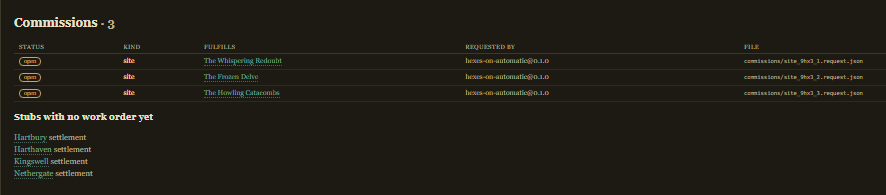

01 / CLAIM
Open the stub
Read a settlement the other lenses minted — or one you wrote by hand — with its size, hex and region already on file.
Hexes marks where people live. Dungeons keys what threatens them. Towns on Automatic is the settlement lens between the two: it opens the stub settlements the others mint in the Campaign Vault and fills them in — markets, powers, and fully built DFRPG people.
In design · the vault contract already reserves its seat · Windows, macOS & Linux when it ships · local-first like its siblings
--- title: Hartbury tags: [settlement] oa_id: set_9hx3_2 oa_kind: settlement oa_spec: 0.2.0 oa_generator: hexes-on-automatic@0.1.0 oa_status: stub settlement: size: village oa_refs: region: reg_9hx3 hex: reg_9hx3#hex-0302 --- # Hartbury A village at hex 0302 of Silverwick Expanse. This is a stub minted by Hexes on Automatic — Towns on Automatic (or the GM) fills it in. <!-- oa:generated begin section="local_life" --> Ask for Osric Two-Dogs, who feeds travelers first and prices the room by what she learns. Services: an inn with a common room, a smith for simple work, and a market day each week. The nearest trouble worth coin is The Howling Catacombs, ~4 days out. Heard in the common room: - Two burned farmsteads this season. Survivors name Ashmark Reavers. <!-- oa:generated end -->
This page describes direction, not a changelog — Towns is in design while its siblings ship. The shape below is the family's proven one, aimed at settlements.
Read a settlement the other lenses minted — or one you wrote by hand — with its size, hex and region already on file.
Innkeeps, reeves, smiths and trouble: real DFRPG builds from the family's NPC engine, geared to their station and rated for what they can handle.
Trades, markets and the local reach of the region's factions, drawn the family way: deterministic candidates first, an optional local model to choose and polish.
Everything lands inside the settlement's own generated fences, one writer per file. Your prose survives, exactly as the vault rules demand.
The vault spec reserved Towns' seat from day one: every Hexes export mints settlement stubs, and Campaigns on Automatic lists them as open work. The queue below is a real screenshot.

Towns starts from working machinery, not a blank page — the same shared packages its siblings run on today.
The Characters engine ships now, inside Dungeons. Real DFRPG builds from Dungeon Fantasy templates and packages, geared to station, rated for combat effectiveness, exportable to GURPS Character Sheet. Meet it on the Dungeons site.
The vault spec is public and already speaks settlement. Stub status, one writer per file, generated fences — the rules Towns will write under are in force today.
Its neighbors are live. Hexes mints the stubs with every region it exports; Campaigns lists them as open work and will show the finished towns the day they land.
Deterministic code owns the structure. An optional small local model picks and polishes from closed lists, with a named fallback — the architecture every shipped sibling proves.
Hexes on Automatic mints these stubs with every region it writes, Dungeons keys the sites around them, and Campaigns reads the whole vault. Start the campaign now; Towns joins it in place.
Towns on Automatic is an original game aid by Kyle Norton for use with GURPS and Dungeon Fantasy Roleplaying Game from Steve Jackson Games. It is not official and is not endorsed by Steve Jackson Games.
GURPS and Dungeon Fantasy Roleplaying Game are trademarks or registered trademarks of Steve Jackson Games. All rights are reserved by Steve Jackson Games. This free, non-resale game aid uses those marks under the SJ Games Online Policy; no SJ Games art, logos, or trade dress are hosted here.